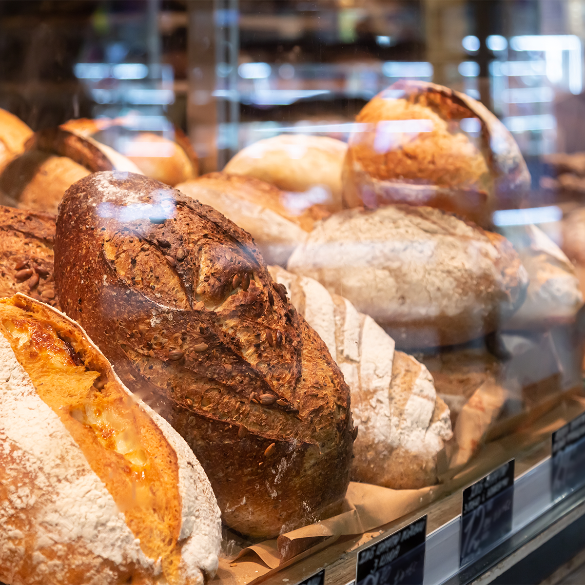

Fresh Breads

Our breads are baked to bring warmth and flavor to your table. Enjoy a slice with breakfast, make a sandwich for lunch, or share a loaf with family.
Estimated price range: $4–$10 per loaf.
Pastries and Morning Treats
Start your morning with a sweet treat from our bakery. Our pastry selection is perfect for commuters, coffee breaks, family breakfasts, and sharing with friends.
Estimated price range: $2–$6 per pastry.
Cakes for Special Occasions
Celebrate birthdays, family gatherings, and other special moments with a bakery cake. Contact us to discuss your preferred size, flavors, and design.
Estimated price range: $20–$80 per cake.
Our Signature Loaf

Estimated price range: $6–$12 per loaf.
Interested in an Order?
Our products are available by visiting the bakery or contacting us about a pre-order. Prices are estimates and may vary by size, ingredients, and availability.